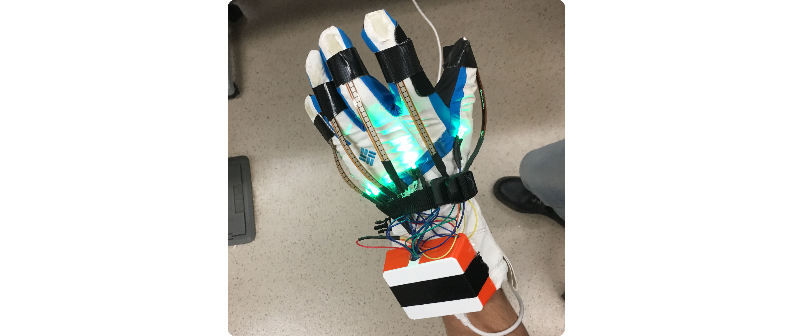
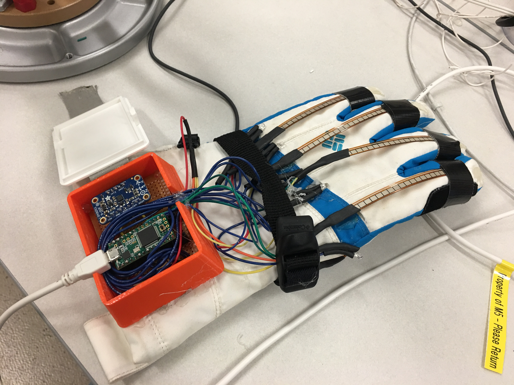

Jazz Hand
This is the Jazz Hand, designed by my friend Otto Benson and I for HackUmass VI and winner of "Best Hardware Hack". It is a wearable glove apparatus that gives users dynamic control over assignable MIDI parameters. One of the main ingredients are the flex sensors attached to each finger. Feel familiar? Flex sensors were popularized by the Nintendo PowerGlove back in 1989. That’s one of the influences for this design, in addition to electronic music performance art and science fiction. An accelerometer allows for control over expression and modulation in the z axis and x axis respectively. For our microcontroller we chose a teensy 3.1 for its ability to efficiently communicate MIDI information to a computer. The final design has the main components soldered to a perf board, all mounted inside a custom designed enclosure.
One of the challenges for this project was getting usable input from the sensors. Using a mix of debouncing and EWMA filtering, we got the note activation, expression, and modulation control to all work consistently. Additionally, making the the glove robust yet lightweight proved to be tricky. One unexpected thing that helped was the strap included on the glove. By running the LED and flex sensor wires underneath it, we made the glove less snag-prone and cable managment more bearable.
We were happy with what we made in the 36 hour constraint, but in the future we would like to implement more controllable parameters. We look forward to attending more hackathons.
